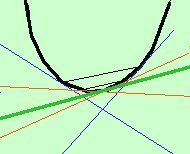

Anche qui e' applicabile il metodo (molto piu' semplice) che vedrai in analisi matematica il prossimo anno (regola di De L'Hospital). comunque, per risolvere ora questi esercizi faremo riferimento al fatto che la tangente e' la posizione limite di una secante quando i due punti di intersezione tendono ad avvicinarsi fra loro indefinitamente, cioe' il discriminante del sistema retta-parabola sara' nullo (soluzioni coincidenti).  Inoltre la soluzione sara' sempre doppia cioe' avremo sempre un quadrato perche' la tangente sara' sempre formata da due tangenti sovrapposte (i punti, anche se coincidenti, sono sempre due e quindi le tangenti sono due) Infatti possiamo pensare la tangente anche come posizione limite di due tangenti a due punti diversi che, spostando la corda, si avvicinano fra di loro fino a coincidere nel punto di tangenza. Nella figura a sinistra le corde sono in nero, le due rette blu hanno i punti di tangenza piu' lontani, le rette rosse hanno i punti di tangenza piu' vicini fra loro e le rette verdi hanno i punti di tangenza coincidenti e sono sovrapposte Esercizio 0 Data la parabola y= x2 - 3x trovare l'equazione della retta tangente nell'origine Soluzione Esercizio 1 Data la parabola y= x2 - 3x + 2 trovare l'equazione della retta tangente nel suo punto di ascissa -1 Soluzione Esercizio 2 Data la parabola y= x2 - 6x + 5 trovare le equazioni delle tangenti condotte alla parabola nei punti di intersezione con l'asse delle ascisse. Detti A e B tali punti, indicato con C il punto di intersezione delle due tangenti calcolare l'area del triangolo ABC Soluzione Esercizio 3 Data la parabola y = x2 trovare le equazioni della sua tangente parallela alla retta y = 2x. Soluzione |